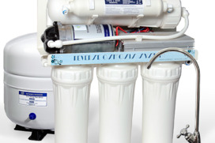

Welcome to vandens
Vandens šildytuvai, boileriai internetu gera kaina | Muresta.lt
2020.10.27 07:36
Prisijungimas Prisijungimas Palyginti prekes (0) Prekių krepšelis Krepšelis tuščias. Viso prekių už 0 00 € Peržiūrėti krepšelį Iki nemokamo pristatymo liko 300 00 € Pristatysime nemokamai! mūsų salonas
Ukmergės g. 285
“Muresta” Vilnius konsultuojame
+370 699 69951
+370 527 37088 Prekių katalogas Vonios įranga ir santechnika Vonios įranga ir santechnika Vonios ir jų priedai Akrilinės vonios Plieninės vonios Akmens masės vonios Ketaus vonios Quaryl medžiagos vonios Daugiau > Dušo kabinos ir ju priedai Kvadratinės dušo kabinos Pusapvalės dušo kabinos Penkiakampės dušo kabinos Dušo boksai Garo pirtys Daugiau > Vandens maišytuvai Praustuvo maišytuvai Vonios maišytuvai Dušo maišytuvai Dušo komplektai ir sistemos Dušo galvos Daugiau > Santechninė keramika Praustuvai Klozetai ir dangčiai Bidė Pisuarai Bakeliai Komplektuojančios dalys Potinkiniai rėmai ir klavišai Rėmų ir WC komplektai Potinkiniai rėmai Klavišai ir tvirtinimai Virštinkiniai rėmai Rankšluosčių džiovintuvai Vandeniniai džiovintuvai Elektriniai džiovintuvai Kombinuoti džiovintuvai Kaitinimo elementai ir valdikliai Pajungimo mazgai Vonios kambario komplektai Vonios baldai ir aksesuarai Vonios baldai ir aksesuarai Vonios baldų komplektai Vonios veidrodžiai Vonios spintelės Kvapai namams Vonios kambario aksesuarai Dezinfektantų dozatoriai Popieriaus laikikliai Plaukų džiovintuvai Muilo dozatoriai Stiklo valytuvai Daugiau > Žvakės Virtuvės įranga ir reikmenys Virtuvės įranga ir reikmenys Plautuvės Akmens masės plautuvės Plieninės plautuvės Tectonite plautuvės Keramikinės plautuvės Plautuvių priedai Vandens maišytuvai plautuvei Plautuvių nuvarvėjimo indai ir lentelės Plytelės ir stiklo blokeliai Plytelės ir stiklo blokeliai Sienų plytelės Grindų plytelės Stiklo blokeliai Vonios plytelės Mozaika, dekoras Virtuvės plytelės Plytelės laukui Plytelių išpardavimas Šildymas ir gyvatukai Šildymas ir gyvatukai Rankų džiovintuvai Židiniai Cirkuliaciniai siurbliai Atsinaujinančios energijos įranga Šilumos siurbliai Rankšluosčių džiovintuvai ir ju priedai Vandeniniai džiovintuvai Elektriniai džiovintuvai Kombinuoti džiovintuvai Kaitinimo elementai ir valdikliai Pajungimo mazgai Šildymo katilai Immergas dujiniai katilai Viessmann dujiniai katilai Kiti dujiniai šildymo katilai Dujinių katilų priedai Šilumos siurbliai Daugiau > Radiatoriai ir jų priedai Dizaino radiatoriai Radiatoriai Radiatorių priedai Vandens šildytuvai Elektriniai vandens šildytuvai Kombinuoti vandens šildytuvai Netiesioginio šildymo Atsarginės šildytuvų dalys Immergas nerūdijančio plieno vandens šildytuvai Daugiau > Grindų šildymo sistemos Grindų šildymo reguliatoriai Grindų šildymo medžiagos Vamzdžiai grindiniam šildymui Montavimo priedai grindiniam šildymui Kolektoriai ir spintelės Kolektoriai Kolektorinės spintelės Kolektorių priedai Mobilūs šildytuvai Elektriniai šildytuvai Dujiniai šildytuvai Dyzeliniai šildytuvai Židinio įrankiai ir aksesuarai Židinių grotelės, oro paskirstymo įranga Krosnelės Konvektoriai ir jų priedai Kabeliai šildymui Elektriniai kilimėliai Grotelės konvektoriui Įleidžiami konvektoriai Pastatomi konvektoriai Sieniniai konvektoriai Komplektuojančios dalys Židinių izoliacija Chemija Kondicionavimas ir vėdinimas Kondicionavimas ir vėdinimas Oro kondicionieriai Mobilūs oro kondicionieriai Oro kondicionieriai / Šilumos siurbliai (iki -15°C) Oro kondicionieriai / Šilumos siurbliai (-15°C / -30°C) Vėdinimo įranga ir priedai Vėdinimo įranga Vėdinimo įrenginių priedai Oro šildytuvai ir priedai Oro šildytuvai Oro šildytuvų priedai Oro užuolaidos ir priedai Oro užuolaidos Oro užuolaidų priedai Plastikinių ortakių sistema Kolektorinės paskirstymo dėžutės Kolektorinių paskirstymo dėžučių priedai Apvalių lanksčių ortakių sistema Universalūs priedai Tiekiamo oro difuzoriai Šalinamo oro difuzoriai Oro sausintuvai Oro drėkintuvai Ventiliatoriai Oro valytuvai Vandentiekis ir kanalizacija Vandentiekis ir kanalizacija Valymo įrenginiai Atbuliniai vožtuvai Alsuokliai Vidaus nuotekų sistemos Trapai Trapai vidaus patalpoms Grotelės trapams Trapai balkonams ir terasoms Lauko trapai Lietaus surinkimo trapai Daugiasluoksniai vamzdžiai ir priedai Vandens filtrų korpusai Vandens filtrai Namų apyvokos reikmenys ir buitis Namų apyvokos reikmenys ir buitis Buitinė chemija ir valymo priemonės Valymo chemija Kanalizacijos chemija Baseinų priežiūros chemija Ekologiškos valymo priemonės Plovimo ir valymo įranga Aukšto slėgio plovyklos Statybiniai siurbliai Buitiniai siurbliai Pelenų siurbliai Šlavimo mašinos Daugiau > Vienkartiniai popieriaus gaminiai Oro gaivikliai Vonios svarstyklės Baseinai ir jų priedai Kärcher valymo priemonės Grožis ir sveikata Grožis ir sveikata Burnos priežiūros priemonės Apsauga nuo virusų Vandens ir oro jonizatoriai Dušo geliai, muilai Masažinės vonios Natūrali kosmetika Kita Sodo, daržo įranga Sodo, daržo įranga Slėgiminiai laistymo rinkiniai Gravitaciniai laistymo rinkiniai Laistymo įranga Lauko ir šiltnamio takeliai Lietaus vandens surinkimo filtrai Automatinis valdymas Vandens kolonėlės Vandens talpos Komposto dėžės Sodo ir vejos traktoriukai Priedai vejos traktoriukams Malkų skaldyklės ir priedai Vejapjovės, žoliapjovės Akumuliatorinės žoliapjovės Elektrinės žoliapjovės Benzininės žoliapjovės Mechaninės, rankinės vejapjovės Šienapjovės Trimeriai, krūmapjovės Akumuliatoriniai trimeriai Elektriniai trimeriai Benzininiai trimeriai Grandininiai pjūklai Grandininiai akumuliatoriniai pjūklai Grandininiai elektriniai pjūklai Grandininiai benzininiai pjūklai Motoblokai, kultivatoriai Benzininiai motoblokai ir kultivatoriai Elektriniai kultivatoriai Priedai motoblokams Lapų pūstuvai Akumuliatoriniai lapų pūstuvai Elektriniai lapų pūstuvai Vandens siurbliai, hidroforai Panardinami vandens siurbliai Hidroforai Laistymo siurbliai Aeratoriai, skarifikatoriai Įrankiai Įrankiai Šlifuokliai Kampiniai šlifuokliai Juostiniai šlifuokliai Ekscentriniai šlifuokliai Vibraciniai šlifuokliai Tiesiniai šlifuokliai Staklės Skersinio pjovimo staklės Išilginio pjovimo staklės Plytelių pjaustymo staklės Gręžimo staklės Betono pjovimo staklės Mechaniniai įrankiai Įrankių spintelės Spaustuvai Suktuvai, gręžtuvai Akumuliatoriniai suktuvai-gręžtuvai Pneumatiniai veržliasukiai Kompresoriai Vienfaziai kompresoriai Trifaziai kompresoriai Matavimo prietaisai Atstumų matuokliai Nivelyrai Maišyklės Rankinės elektrinės maišyklės Siaurapjūkliai Generatoriai Diskiniai pjūklai Akumuliatoriai ir krovikliai Kärcher priedai Įranga senjorams ir neįgaliesiems Viešoms įstaigoms, verslui Viešoms įstaigoms, verslui Rankų džiovintuvai Skysto muilo dozatoriai Tualetinio popieriaus laikikliai Popierinių rankšluosčių laikikliai Kūdikių vystymo lentos Baseinų chemija Valymo priemonės verslui Vonios kambarių dizainai Vonios kambarių dizainai 10° Chrome Formy Rosa Classic Avocado BeHappy Akcijos Akcijos Maišytuvai, dušo komplektai Potinkiniai rėmai ir klavišai Santechninė keramika Vonios kambario baldai Vonios ir dušo kabinos Trapai, latakai, sifonai Šildymo ir kondicionavimo įranga Šiuo metu vykdomos akcijos Išpardavimas Išpardavimas Santechninė keramika Vonios kambario baldai Maišytuvai Šildymo įranga Vonios aksesuarai Plautuvės Trapai ir latakai Vonios, dušo kabinos, sienelės, padėklai Ravak išpardavimas Išpardavimas ŠV. KALĖDŲ DOVANOS ŠV. KALĖDŲ DOVANOS Švariems namams Kvapniems namams Kūno harmonijai Jaukiems namams Akcijos IŠPARDAVIMAS Patarimai Gamintojai Apsauga nuo virusų
Prekių katalogas
Prekių katalogas Vonios įranga ir santechnika Vonios ir jų priedai Akrilinės vonios Plieninės vonios Akmens masės vonios Ketaus vonios Quaryl medžiagos vonios Vonios sienelės Vonios priedai Vandens maišytuvai voniai Masažinės vonios Masažinės sistemos Vonios valymo chemija Dušo kabinos ir ju priedai Kvadratinės dušo kabinos Pusapvalės dušo kabinos Penkiakampės dušo kabinos Dušo boksai Garo pirtys Dušo padėklai Akriliniai dušo padėklai Akmens masės dušo padėklai Plieniniai dušo padėklai Keraminiai dušo padėklai Dušo padėklų priedai Dušo durys ir sienelės Trapai, latakai ir jų priedai Trapai Latakai Sifonai ir priedai Grotelės Dušo kabinų priedai Dušo vandens maišytuvai Dušo komplektai ir sistemos Dušo galvos Valymo chemija Vandens maišytuvai Praustuvo maišytuvai Vonios maišytuvai Dušo maišytuvai Dušo komplektai ir sistemos Dušo komplektai Dušo sistemos Dušo galvos Rankinės dušo galvos Stacionarios dušo galvos Virtuvės plautuvės maišytuvai Bidė maišytuvai Termostatiniai maišytuvai Nukalkintojai Kampiniai ventiliai ir jungtys Maišytuvų komplektai Komplektuojančios maišytuvų dalys Santechninė keramika Praustuvai Praustuvai Praustuvų priedai Vandens maišytuvai praustuvams Akmens masės praustuvai Plieniniai praustuvai Klozetai ir dangčiai Pakabinami klozetai Pastatomi klozetai Dangčiai ir sėdynės Klozetų komplektuojančios dalys Pakabinamų WC komplektai Bidė Pisuarai Bakeliai Komplektuojančios dalys Potinkiniai rėmai ir klavišai Rėmų ir WC komplektai Potinkiniai rėmai Klozetui Bidė Praustuvui Pisuarui Klavišai ir tvirtinimai Virštinkiniai rėmai Rankšluosčių džiovintuvai Vandeniniai džiovintuvai Elektriniai džiovintuvai Kombinuoti džiovintuvai Kaitinimo elementai ir valdikliai Pajungimo mazgai Vonios kambario komplektai Vonios baldai ir aksesuarai Vonios baldų komplektai Vonios veidrodžiai Vonios spintelės Kvapai namams Vonios kambario aksesuarai Dezinfektantų dozatoriai Popieriaus laikikliai Popieriaus lapelių laikikliai Popieriaus rulonėlių laikikliai Stalo servetėlių laikikliai Plaukų džiovintuvai Muilo dozatoriai Stiklo valytuvai Kabliukai Lentynėlės Muilinės Rankšluosčių laikikliai Stiklinės Kūdikių vystymo lentos WC šepečiai Vonios aksesuarai Hansgrohe Logis Universal Vonios aksesuarai Hansgrohe Logis Vonios aksesuarai Hansgrohe PuraVida Dušo užuolaidos ir kabliukai Kosmetiniai veidrodžiai Aksesuarų komplektai Žvakės Virtuvės įranga ir reikmenys Plautuvės Akmens masės plautuvės Plieninės plautuvės Tectonite plautuvės Keramikinės plautuvės Plautuvių priedai Vandens maišytuvai plautuvei Plautuvių nuvarvėjimo indai ir lentelės Plytelės ir stiklo blokeliai Sienų plytelės Grindų plytelės Stiklo blokeliai Vonios plytelės Mozaika, dekoras Virtuvės plytelės Plytelės laukui Plytelių išpardavimas Šildymas ir gyvatukai Rankų džiovintuvai Židiniai Cirkuliaciniai siurbliai Atsinaujinančios energijos įranga Šilumos siurbliai Immergas šilumos siurbliai Fujitsu šilumos siurbliai Viessmann šilumos siurbliai Viessmann šilumos siurblių priedai Rankšluosčių džiovintuvai ir ju priedai Vandeniniai džiovintuvai Elektriniai džiovintuvai Kombinuoti džiovintuvai Kaitinimo elementai ir valdikliai Pajungimo mazgai Šildymo katilai Immergas dujiniai katilai Viessmann dujiniai katilai Kiti dujiniai šildymo katilai Dujinių katilų priedai Šilumos siurbliai Immergas šilumos siurbliai Fujitsu šilumos siurbliai Viessmann šilumos siurbliai Viessmann šilumos siurblių priedai Kieto kuro šildymo katilai Kieto kuro katilų priedai Elektriniai šildymo katilai Dūmų šalinimo sistemos Granuliniai šildymo katilai Skysto kuro šildymo katilai Radiatoriai ir jų priedai Dizaino radiatoriai Radiatoriai Radiatorių priedai Vandens šildytuvai Elektriniai vandens šildytuvai Kombinuoti vandens šildytuvai Netiesioginio šildymo Atsarginės šildytuvų dalys Immergas nerūdijančio plieno vandens šildytuvai Tatramat vandens šildytuvai ir jų dalys Akumuliacinės talpos Daugiafunkcės talpos Grindų šildymo sistemos Grindų šildymo reguliatoriai Grindų šildymo medžiagos Vamzdžiai grindiniam šildymui Montavimo priedai grindiniam šildymui Kolektoriai ir spintelės Kolektoriai Kolektorinės spintelės Kolektorių priedai Mobilūs šildytuvai Elektriniai šildytuvai Dujiniai šildytuvai Dyzeliniai šildytuvai Židinio įrankiai ir aksesuarai Židinių grotelės, oro paskirstymo įranga Krosnelės Konvektoriai ir jų priedai Kabeliai šildymui Elektriniai kilimėliai Grotelės konvektoriui Įleidžiami konvektoriai Pastatomi konvektoriai Sieniniai konvektoriai Komplektuojančios dalys Židinių izoliacija Chemija Kondicionavimas ir vėdinimas Oro kondicionieriai Mobilūs oro kondicionieriai Oro kondicionieriai / Šilumos siurbliai (iki -15°C) Oro kondicionieriai / Šilumos siurbliai (-15°C / -30°C) Sieniniai oro kondicionieriai Grindiniai oro kondicionieriai Vėdinimo įranga ir priedai Vėdinimo įranga Vėdinimo įrenginių priedai Oro šildytuvai ir priedai Oro šildytuvai Oro šildytuvų priedai Oro užuolaidos ir priedai Oro užuolaidos Oro užuolaidų priedai Plastikinių ortakių sistema Kolektorinės paskirstymo dėžutės Kolektorinių paskirstymo dėžučių priedai Apvalių lanksčių ortakių sistema Universalūs priedai Tiekiamo oro difuzoriai Šalinamo oro difuzoriai Oro sausintuvai Oro drėkintuvai Ventiliatoriai Oro valytuvai Vandentiekis ir kanalizacija Valymo įrenginiai Atbuliniai vožtuvai Alsuokliai Vidaus nuotekų sistemos Trapai Trapai vidaus patalpoms Grotelės trapams Trapai balkonams ir terasoms Lauko trapai Lietaus surinkimo trapai Daugiasluoksniai vamzdžiai ir priedai Vandens filtrų korpusai Vandens filtrai Namų apyvokos reikmenys ir buitis Buitinė chemija ir valymo priemonės Valymo chemija Kanalizacijos chemija Baseinų priežiūros chemija Ekologiškos valymo priemonės Plovimo ir valymo įranga Aukšto slėgio plovyklos Statybiniai siurbliai Buitiniai siurbliai Pelenų siurbliai Šlavimo mašinos Langų valytuvai Gariniai valytuvai Šluotos ir jų priedai Vienkartiniai popieriaus gaminiai Oro gaivikliai Vonios svarstyklės Baseinai ir jų priedai Kärcher valymo priemonės Grožis ir sveikata Burnos priežiūros priemonės Apsauga nuo virusų Vandens ir oro jonizatoriai Dušo geliai, muilai Masažinės vonios Natūrali kosmetika Kita Sodo, daržo įranga Slėgiminiai laistymo rinkiniai Gravitaciniai laistymo rinkiniai Laistymo įranga Lauko ir šiltnamio takeliai Lietaus vandens surinkimo filtrai Automatinis valdymas Vandens kolonėlės Vandens talpos Komposto dėžės Sodo ir vejos traktoriukai Priedai vejos traktoriukams Malkų skaldyklės ir priedai Vejapjovės, žoliapjovės Akumuliatorinės žoliapjovės Elektrinės žoliapjovės Benzininės žoliapjovės Mechaninės, rankinės vejapjovės Šienapjovės Trimeriai, krūmapjovės Akumuliatoriniai trimeriai Elektriniai trimeriai Benzininiai trimeriai Grandininiai pjūklai Grandininiai akumuliatoriniai pjūklai Grandininiai elektriniai pjūklai Grandininiai benzininiai pjūklai Motoblokai, kultivatoriai Benzininiai motoblokai ir kultivatoriai Elektriniai kultivatoriai Priedai motoblokams Lapų pūstuvai Akumuliatoriniai lapų pūstuvai Elektriniai lapų pūstuvai Vandens siurbliai, hidroforai Panardinami vandens siurbliai Hidroforai Laistymo siurbliai Aeratoriai, skarifikatoriai Įrankiai Šlifuokliai Kampiniai šlifuokliai Juostiniai šlifuokliai Ekscentriniai šlifuokliai Vibraciniai šlifuokliai Tiesiniai šlifuokliai Staklės Skersinio pjovimo staklės Išilginio pjovimo staklės Plytelių pjaustymo staklės Gręžimo staklės Betono pjovimo staklės Mechaniniai įrankiai Įrankių spintelės Spaustuvai Suktuvai, gręžtuvai Akumuliatoriniai suktuvai-gręžtuvai Pneumatiniai veržliasukiai Kompresoriai Vienfaziai kompresoriai Trifaziai kompresoriai Matavimo prietaisai Atstumų matuokliai Nivelyrai Maišyklės Rankinės elektrinės maišyklės Siaurapjūkliai Generatoriai Diskiniai pjūklai Akumuliatoriai ir krovikliai Kärcher priedai Įranga senjorams ir neįgaliesiems Viešoms įstaigoms, verslui Rankų džiovintuvai Skysto muilo dozatoriai Tualetinio popieriaus laikikliai Popierinių rankšluosčių laikikliai Kūdikių vystymo lentos Baseinų chemija Valymo priemonės verslui Vonios kambarių dizainai 10° Chrome Formy Rosa Classic Avocado BeHappy Akcijos Maišytuvai, dušo komplektai Potinkiniai rėmai ir klavišai Santechninė keramika Vonios kambario baldai Vonios ir dušo kabinos Trapai, latakai, sifonai Šildymo ir kondicionavimo įranga Šiuo metu vykdomos akcijos Išpardavimas Santechninė keramika Vonios kambario baldai Maišytuvai Šildymo įranga Vonios aksesuarai Plautuvės Trapai ir latakai Vonios, dušo kabinos, sienelės, padėklai Ravak išpardavimas Išpardavimas ŠV. KALĖDŲ DOVANOS Švariems namams Kvapniems namams Kūno harmonijai Jaukiems namams Akcijos IŠPARDAVIMAS Patarimai Gamintojai Apsauga nuo virusų Pradžia / Prekių katalogas / Šildymas ir gyvatukai / Vandens šildytuvaiPrekių katalogas
Vonios įranga ir santechnika Vonios baldai ir aksesuarai Virtuvės įranga ir reikmenys Plytelės ir stiklo blokeliai Šildymas ir gyvatukai Rankų džiovintuvai Židiniai Cirkuliaciniai siurbliai Atsinaujinančios energijos įranga Rankšluosčių džiovintuvai ir ju priedai Šildymo katilai Radiatoriai ir jų priedai Vandens šildytuvai Elektriniai vandens šildytuvai Kombinuoti vandens šildytuvai Netiesioginio šildymo Atsarginės šildytuvų dalys Immergas nerūdijančio plieno vandens šildytuvai Tatramat vandens šildytuvai ir jų dalys Akumuliacinės talpos Daugiafunkcės talpos Grindų šildymo sistemos Kolektoriai ir spintelės Mobilūs šildytuvai Židinio įrankiai ir aksesuarai Židinių grotelės, oro paskirstymo įranga Krosnelės Konvektoriai ir jų priedai Komplektuojančios dalys Židinių izoliacija Chemija Kondicionavimas ir vėdinimas Vandentiekis ir kanalizacija Namų apyvokos reikmenys ir buitis Grožis ir sveikata Sodo, daržo įranga Įrankiai Įranga senjorams ir neįgaliesiems Viešoms įstaigoms, verslui Vonios kambarių dizainai Akcijos Išpardavimas ŠV. KALĖDŲ DOVANOSPrekių užsakymas
E-parduotuvėje:
Sudėkite norimas prekes į krepšelį ir spauskite Pirkti
Elektroniniu paštu:
info@muresta.lt
Telefonu:
+370 699 69951 , +370 527 37088
Mūsų salone:
Ukmergės g. 285, Vilnius
Darbo laikas: I-V 9:00-18:00, VI 10:00-15:00
Tel.: +370 527 37088
Prekių atsiėmimas sandėlyje:
Ukmergės g. 285, Vilnius
Darbo laikas: I-V 9:00-17:30
Raudondvario pl. 78, Kaunas
Darbo laikas: I-V 8:00-17:00
Vandens šildytuvai
Elektriniai vandens šildytuvai Kombinuoti vandens šildytuvai Netiesioginio šildymo Atsarginės šildytuvų dalys Immergas nerūdijančio plieno vandens šildytuvai Tatramat vandens šildytuvai ir jų dalys Akumuliacinės talpos Daugiafunkcės talposMuresta.lt – lyderiaujančių gamintojų santechnikos įranga gera kaina internetu!
Vandens šildytuvas yra vienas praktiškiausių įrenginių namie, o ypač privačiuose namuose. Boileris leidžia net ir nešildymo sezonu bet kada naudotis karštu vandeniu, todėl sumažėja rūpesčių, kaip visiems namams paruošti karštą vandenį. Mažesnės talpos vandens boileriai taip pat yra patrauklus pasirinkimas turintiems sodybą, lankomą tik vasaros laikotarpiu.
Vandens šildytuvai yra elektriniai arba kombinuoti. Tiek elektriniai, tiek kombinuoti vandens šildytuvai mūsų kataloge siūlomi dviejų gamintojų - Gorenje ir Dražice . Įsigyti vandens šildytuvą jums labiausiai priimtina kaina galite ir internetu, ir įsigyti mūsų salone. „Dražice“ firma yra pirmaujantis vandens šildytuvų gamintojas Čekijoje. Įmonė eksportuoja savo gaminius į beveik dvidešimt šalių visame pasaulyje. Šios įmonės tikslas pateikti geriausios kokybės produktus už mažiausią kainą. Slovėnijos gamintojas „Gorenje“ deklaruoja, kad jos gamybos procese naudojamos pažangios technologijos, dėl ko gaminiai pasižymi ne tik kokybe, funkcionalumu, patikimumu, bet ir atitinka visus ekologinius standartus . Dėl šių savybių įmonės produkcija yra populiari daugelyje šalių, o pardavimai pastaruoju metu tik auga. Išsirinkę vandens šildytuvą jums labiausiai priimtina kaina, įsigyti jį galite internetu arba mūsų salone.
Savo svetainėje nuolatos pildome prekių su nuolaida katalogą. Tai puiki proga, kai įvairių tipų vandens šildytuvai (elektriniai boileriai ir kombinuoti boileriai) parduodami pigiau. Savo klientams siūlome patrauklias pristatymo sąlygas net jeigu gyvenate tolimesniame Lietuvos kampelyje. Jeigu perkama prekių už ne mažiau nei 300 eur, vandens boileriai ir kitos prekės pristatomos nemokamai!
Klientų aptarnavimas Pirkimo taisyklės Atsiskaitymas Pirkimas išsimokėtinai Pristatymas Grąžinimo sąlygos Garantija Privatumo politika Informacija Apie mus Kontaktai Tax free paslauga Murestagroup
Muresta.lt © 2020 UAB Semerita. Be UAB Semerita sutikimo draudžiama kopijuoti ir platinti svetainėje esančią informaciją. El. parduotuvių nuoma: verskis.lt Į viršų
